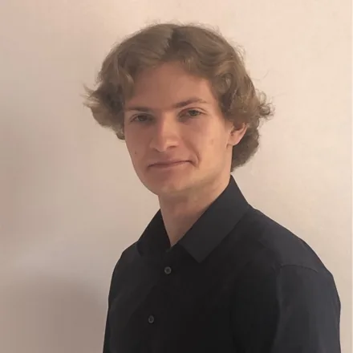
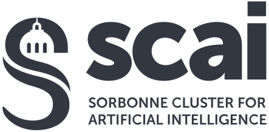

Saclay, France
Research Engineer Intern
CEA List· LVA
I am building a persistent camera–radar 3D state, including the multimodal architecture and the complete nuScenes training and benchmarking pipeline for 3D detection and semantic segmentation.
I work on deep learning for perception, moving toward world models for autonomous driving.
Seeking PhD opportunities
I am looking for a PhD in deep learning, with a focus on perception and world models for autonomous driving. Get in touch.
MVA master's student at ENS Paris-SaclayResearch Engineer Intern at CEA List

My work spans visual localization, 3D perception, and multimodal representation learning.
I study how deep learning systems can combine semantic and geometric cues across sensors and viewpoints. Building on this work in perception, I am interested in moving toward persistent world models that represent dynamic scenes over time for autonomous driving.
CEA List· LVA
I am building a persistent camera–radar 3D state, including the multimodal architecture and the complete nuScenes training and benchmarking pipeline for 3D detection and semantic segmentation.
I improved position/yaw recall@1m by 4% over the OrienterNet baseline. I extended the model with Fourier encodings and graph neural networks for geometry-grounded, viewpoint-invariant global visual localization and delivered reproducible Docker environments.

I deployed an interactive transformer-based system for large-scale text comparison. I built the efficient processing pipeline and its public-facing Python and JavaScript demonstration.
I won 2nd place and a $3k award at Huawei TechArena by training a multimodal model to predict personalized spatial audio from paired ear images and HRTF data.
We achieved the best score at the ICM Hackathon 2026 with a transformer that decodes a mouse’s position from neural recordings.
Master’s degree · M2 Mathematics, Vision, Learning (MVA)
Shanghai ARWU 2026 · #13 worldwide
The MVA is one of the best AI master’s programs in France and Europe. Led by ENS Paris-Saclay, it connects the mathematical foundations of machine learning with computer vision and data modelling.
I earned 85.7/100 with a 4.0 GPA.
Master’s degree · M1 Artificial Intelligence
Shanghai ARWU 2026 · #13 worldwide
I earned 75.1/100.
Bachelor’s degree · Mathematics and Computer Science
Shanghai ARWU 2026 · #55 worldwide
I completed an intensive three-year double-major program with 77.5/100.
TOEFL iBT: 106/120 · CEFR C1